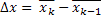
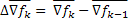
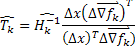
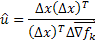
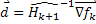

While there are already countless math libraries for performing common matrix/array functions, StarMath is distinguished by its simplicity and flexbility. There is no need to declare vectors and matrices in a specific library format. It works simliar to Math.function calls in C#.
This is part of the Object-Oriented Optimization Toolbox (see: OOOT for more optimization methods and uses of StarMath)
This bit of matrix math is used to calculate the Broyden-Fletcher-Goldfarb-Shanno approach to approximating the Newton approach. This is shown to illustrate some of the basic add and multiply functions of StarMath.
|  | var diffX = x.subtract(xLast); |
|  |
var diffGradF = gradf.subtract(gradFLast); |
|  | T = StarMath.multiplyVectorsIntoAMatrix(diffX, diffGradF); T = T.divide(diffX.multiplyDot(diffGradF)); |
|  | u = StarMath.multiplyVectorsIntoAMatrix(diffX, diffX); u = u.multiply(diffX.multiplyDot(diffGradF)); |
IMinusT = StarMath.makeIdentity(T.GetLength(0)).subtract(T); invH = IMinusT.multiply(invHLast.multiply(IMinusT)).add(u); |
|
|  | dir = invH.multiply(gradf); |